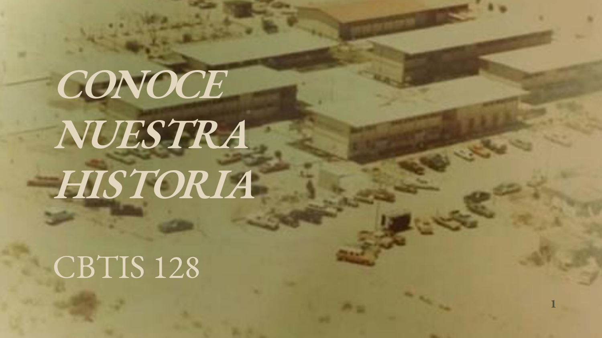

C.B.T.i.s No. 128
"Alcancemos el mañana con nuestra propia tecnología"
Conoce Nuestra Historia
El 16 de Abril de 1971 es publicada en el Diario Oficial de la Federacion el acuerdo presidencial por el que se modifica la estructura organica administratica de la SEP y se da paso a la creacion de la Direccion General de Educacion Tecnologica Industrial, como una dependencia adscrita a la subcretaria de Educacion Media Superior (SEMS), dependiendo de la secretaria de Educacion Publica (SEP) que ofrece el servicio educativo del nivel medio superior tecnologico, en Agosto de ese mismo año se publican las funciones que tendra esta institucion y se integran a ella los centros de capacitacion para el trabajo industrial,escuelas tecnologicas insdustriales, los centros de estudios tecnologicos en el Distrito Federal y los centros de estudios tecnologicos foraneos.

el 15 de febrero de 1980 se mudarian a sus instalaciones propias, ubicadas en la calle Nueva Zelanda y mora #7870 en el fraccionamiento Oasis,ofertando las carreras tecnicas de Aire acondicionado y Refrigeracion, Electronica, Administracion, Gericultura y Alimentos. Durante los 37 años desde su fundcion el plantel ha estado a cargo de los directores: >Ing.Salvador de Leon Anzures, Ing. Adolfo Gandara Rivera, Ing. Humberto Dominguez Rascon, Ing. Rosa Manuela Herrera, Ing.Francisco Gerardo Carrillo Castañeda, Lic. Norma Alicia Medina Rivas y el M.A Francisco Javier Garcia Valles. En la actualidad el plantel cuenta con una plantilla de 123 empleados:75 docentes, 48 administrativos y personal en servicios generales, atendiendo a una poblacion escolar de 2881 alumnos distribuidos en dos turnos, ofertando las especialidades de Laboratorista quimico, Gericultura, Administracion de Recursos Humanos, Programacion, Soporte y Mantenimiento de Equipo de Computo, Refrigeracion y Climatizacion, Electronica; convirtiendose asi, en una de las mas grandes del Estado y del subsistema DGETI.
Fuente: CBTIS128
Conocenos
MISION
nuestra mision es ser medio fundamental para Adquirir, Transmitir y Acreditar la Cultura Tecnologica, formando Bachilleres Tecnicos con un Alto Nivel Acanemico y Tecnologico prepardos para responder a las necesidades del Desarrollo Estatal, a la preservacion de nuestros recursos naturales,a la produccion, y el desarrollo de bienes y servicios.
Fuente: CBTIS128
 VISION
VISION
Nuestra vision es ser un sistema de Excelencia, en los ambitos Academicos, Tecnologicos y de investigacion, que satisfaga ampliamente los requerimientos de Recursos Humanos del Sector Productivo y de la Sociedad en el Estado de Chihuahua.
Fuente: CBTIS128
OBJETIVO DE LA CALIDAD
Satisfacer las necesidades y expectativas de la Sociedad en Educación Media Superior Tecnológica, a través de la formación de Bachilleres y Técnicos Profesionales que fortalezcan y desarrollen una Cultura Tecnológica y una Iinfraestructura Industrial y de Servicios con enfoque hacia la calidad.
Fuente: CBTIS128
POILITICA DE CALIDAD
Formar y Desarrollar Integralmente a los Educandos del Sistema de Educación Tecnológica Industrial,en donde se manifieste el Avance y Desarrollo Tecnológico, la Experiencia del Personal Docente, Técnico, Administrativo y Directivo, reforzando los valores que los motiven a la calidad, creatividad y la mejora continua en los procesos institucionales para la satisfacción de nuestros clientes.
Fuente: CBTIS128
Mensaje del director
Con su apoyo y esfuerzo, a lo largo de estos años sus hijos han logrado terminar la educación básica y están por comenzar una nueva etapa. Ahora cursarán la Educación Media Superior, donde de manera especial necesitarán que ustedes los acompañen y motiven a seguir adelante. Esta nueva fase les proporcionará conocimientos, capacidades, actitudes y valores que les servirán para desarrollarse como personas y como ciudadanos, además de prepararlos tanto para ingresar a la educación superior como para incorporarse a la actividad productiva en mejores condiciones. El ingreso a la Educación Media Superior representa un desafío para sus hijos, pues enfrentarán un sistema académico diferente al de la secundaria, a la vez que seguirán experimentando los cambios físicos, psicológicos y sociales de su adolescencia. Para muchos jóvenes, asimilar de manera simultánea todas estas modificaciones es muy difícil y puede llevarlos a cometer el grave error de abandonar la escuela. Actualmente, sólo 60 de cada 100 estudiantes que ingresan a la Educación Media Superior logra terminar sus estudios. Para que los jóvenes enfrenten con éxito los retos de esta etapa, es sumamente importante el apoyo de los padres. Es necesario que ustedes sigan de cerca su avance en la escuela: que se aseguren de que sus hijos asistan a clases, tengan un buen desempeño académico y muestren un comportamiento apropiado. También es muy importante prestar atención a lo que les sucede fuera de los horarios de clase: a qué dedican su tiempo libre; quiénes son sus amistades y si están realizando actividades deseables para su formación como los deportes o actividades artísticas. La intención de estar al tanto de sus hijos, es guiarlos, además de prevenir y actuar ante situaciones de riesgo que los puedan llevar a abandonar sus estudios. Usted no está solo en esta tarea y cuenta con el apoyo de la escuela para asegurar que sus hijos concluyan la Educación Media Superior. El Gobierno Federal y los Gobiernos Estatales han puesto en marcha el Movimiento Nacional para Combatir el Abandono Escolar, que ofrece apoyo e información a escuelas, estudiantes y padres de familia para prevenir situaciones de riesgo, detectarlas a tiempo y reaccionar para evitar que los jóvenes dejen la escuela. La escuela cuenta con diversos materiales sobre el tema y realizará actividades para apoyar a sus hijos y a usted en la meta de lograr que todos los jóvenes concluyan sus estudios. Hagamos todos que ésta sea nuestra tarea más importante.
Atentamente:
Dirección del PlantelFuente: CBTIS128
Ubicacion del plantel
|
|---|